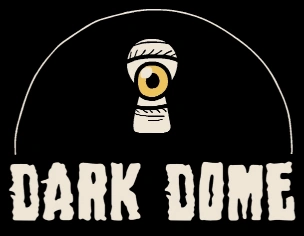

Arquivos da Dark Dome
Explore os jogos da Dark Dome e descubra diferentes histórias de mistério, investigação e suspense.
Cada jogo apresenta novos personagens, locais misteriosos, enigmas e acontecimentos que fazem parte do universo da Dark Dome.
Sobre a Dark Dome
A Dark Dome é um estúdio independente conhecido por seus jogos de aventura no estilo point-and-click, com elementos de escape room, mistério e quebra-cabeças.